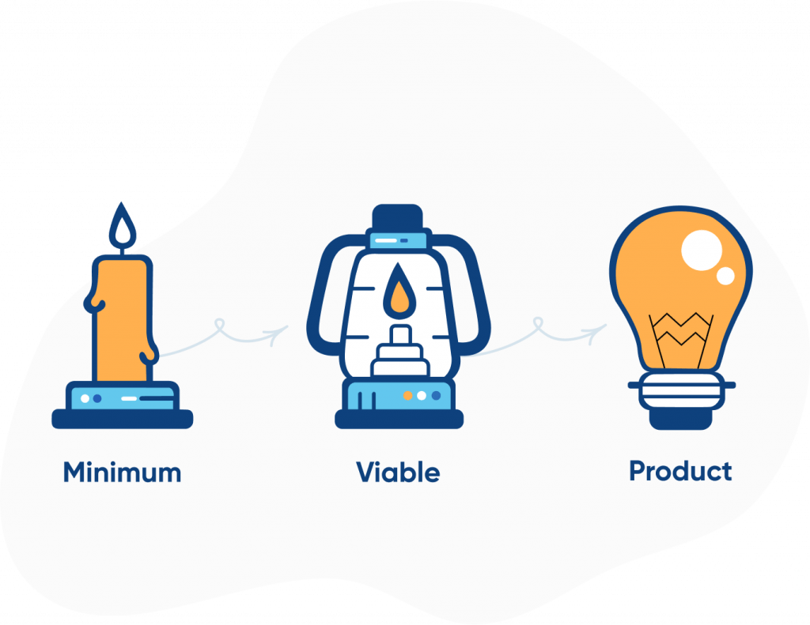

MVP mõiste
Minimal Viable Product (MVP) - toote, teenuse või teenuse testversioon, millel on minimaalne funktsioonide kogum (mõnikord isegi üks), mis toob lõpptarbijale väärtust.
Kuidas ma saan MVP printsiipi kasutada oma IT projektides:
- Alustan lihtsast versioonist: Teen toote valmis, lisades ainult kõige olulisemad funktsioonid, mis on vajalikud.
- Kogun tagasisidet: Loodan, et kasutajad proovivad toodet ja ütlevad, mis neile meeldib või ei meeldi.
- Parandan toodet:Teen muudatusi ja täiustusi vastavalt sellele, mida kasutajad on öelnud.
- Säästan aega ja raha: Ei raiska aega ja raha funktsioonidele, mida kasutajad ei vaja, vaid keskendun sellele, mis on kõige olulisem.